Themes for the Desk
In the video you sent, Claude Code's desktop app gets a /theme tray of live ASCII wallpapers. This plan brings the idea to Spool's Desk, where every pane is a live Claude terminal. The choices I need from you are at the end.
- Author
![]() Dustin Karp
Dustin Karp- Status
- Built Nov 13
- Themes
- 8 built, 12 new ideas
- Tested on
- xterm 6 in Electron 33, Claude Code 2.1.322
- Builds on
- The Desk from Nov 12
The Desk with the theme tray open
Click a theme, or click the window and use the arrow keys.
Claude Code's /theme tray
Typing /theme opens a tray above the composer with eight wallpapers: Claude Code, Cloud Drift, Honu Lagoon, Koi Pond, Jellyfish, Paper Boats, Fireflies and Moonlit. Each one is drawn in characters. Every pixel of a cloud or a koi is a glyph on a small tile, and the scenes move slowly.
These parts carry over to the Desk:
- The wallpaper runs behind the whole window. The chat list and title bar are tinted glass over it, so the window reads as one scene.
- The chat column has a lighter lane behind it, so the text stays easy to read. On the Desk that becomes the choice of how much wallpaper shows inside panes.
- Clicking a thumbnail applies it right away, with a circular reveal that starts at the thumbnail and an edge drawn in characters.
On the Desk, terminals cover almost the whole window, so the wallpaper has to show through the panes. The text in each pane also comes from Claude Code, which picks its own colors, so Spool has to pass the theme on to Claude.
The themes
Each one uses a single material in every layer and reacts in its own way to what Claude is doing.
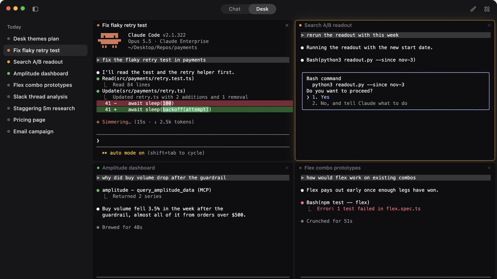
StillSpoolToday's look stays the default, with no wallpaper and solid panes.A waiting pane gets an amber ring. Moves at 12 fpsClayClaude's clay color on a warm dark ground of Claude's spinner glyphs, · ✢ ✳ ✶ ✻ ✽, laid on the terminal grid.Glyphs near a working pane spin faster. A finished pane throws off a ring of ✻.
Moves at 12 fpsClayClaude's clay color on a warm dark ground of Claude's spinner glyphs, · ✢ ✳ ✶ ✻ ✽, laid on the terminal grid.Glyphs near a working pane spin faster. A finished pane throws off a ring of ✻.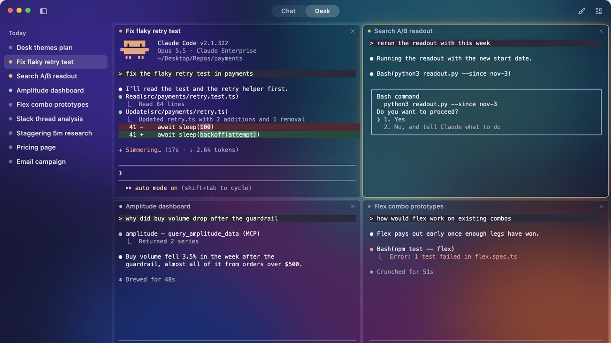
StillGlassYour desktop picture shows through macOS translucency. Panes are blurred glass with a fine light edge, and a soft highlight follows the pointer.A waiting pane gets an amber edge. A finished one gets a sweep of light. StillPaperThe one light theme. Panes are sheets of paper on a green cutting mat, and rulers along the desk count terminal columns and rows.A waiting pane gets a sticky note and a finished one a pencil check. Hovering a pane marks its size on the rulers.
StillPaperThe one light theme. Panes are sheets of paper on a green cutting mat, and rulers along the desk count terminal columns and rows.A waiting pane gets a sticky note and a finished one a pencil check. Hovering a pane marks its size on the rulers.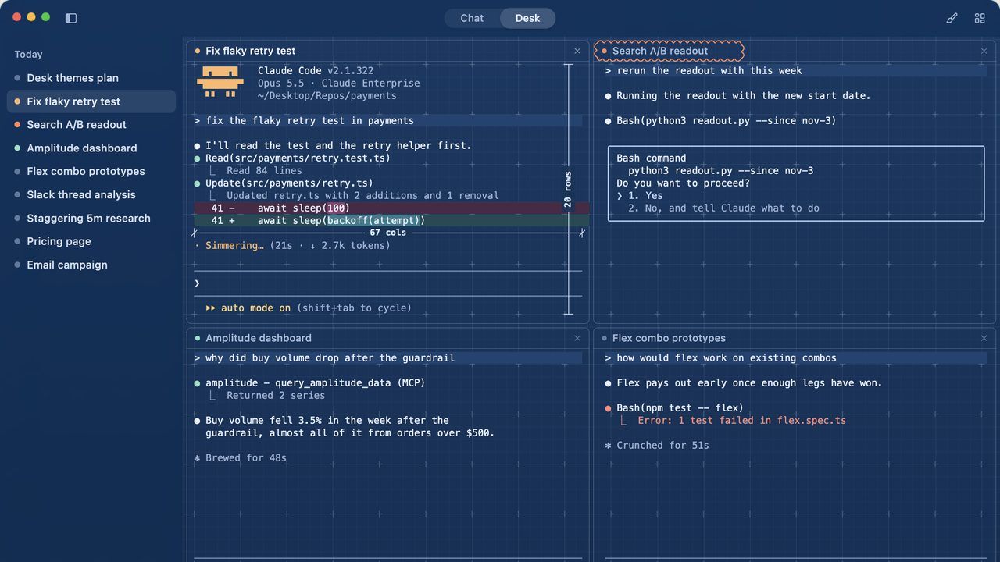
StillBlueprintA drafting grid is laid on the terminal cells, and pane edges are drawn in fine white line.A waiting pane gets a revision cloud around its title. Resizing and Tidy show dimension lines in columns and rows. Still, slow scan barPhosphorPanes are green CRT screens on a dark bezel, with scanlines and a soft glow on the text.A waiting screen turns amber. Switching to Phosphor powers the screens on like a CRT.
Still, slow scan barPhosphorPanes are green CRT screens on a dark bezel, with scanlines and a soft glow on the text.A waiting screen turns amber. Switching to Phosphor powers the screens on like a CRT. Moves at 15 fpsSnowfallSnow drawn in characters falls behind the panes on a night sky and settles in drifts on their top edges.A waiting pane casts warm light on the snow, and a finished one blows the flakes back.
Moves at 15 fpsSnowfallSnow drawn in characters falls behind the panes on a night sky and settles in drifts on their top edges.A waiting pane casts warm light on the snow, and a finished one blows the flakes back.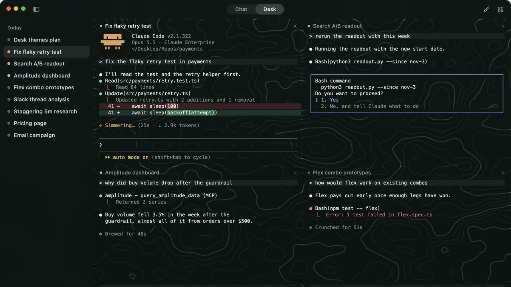
Moves at 12 fpsContourA topographic map drifts slowly behind the panes.Panes where Claude works rise into hills, so the lines bunch up around them in amber. A finished pane sends a ripple through the lines.More themes to try
Switch the tray in Fig 1 to New ideas to try each one live, and press Finish a turn to see how it reacts.
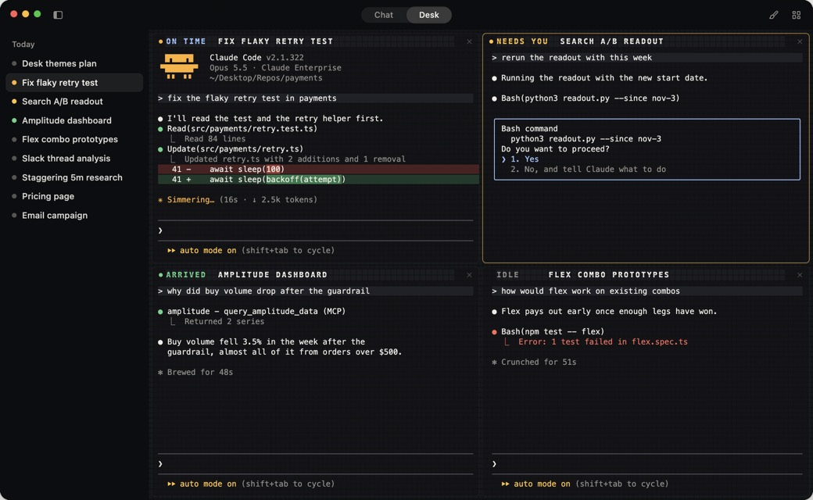
Still, flaps flip on changeDeparturesA split-flap board. Every pane title is a row of flaps, and the empty cells behind the text are blank flaps.When Claude needs you, the title flips to NEEDS YOU in yellow. A finished turn flips to DONE with its time, then settles on ARRIVED.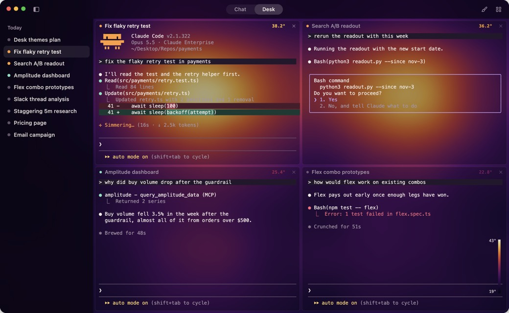
Moves at 10 fpsThermalA heat camera. Each pane glows with how much Claude has done in it lately, with a reading in its title bar and the camera's scale in the corner.A working pane runs hot, a waiting pane holds warm, and a finished pane cools over about a minute. Hovering a pane puts the crosshair on it.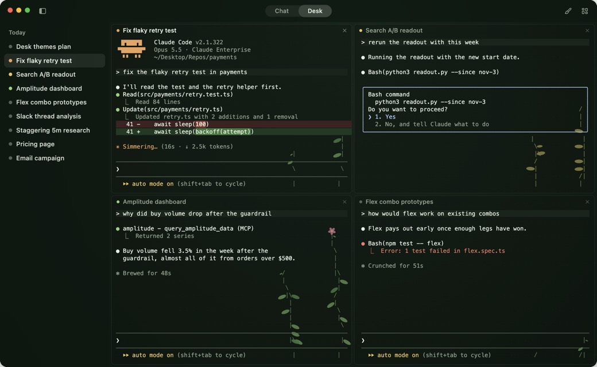
Moves at 8 fpsGreenhouseVines grow up the right side of each pane, in the cells the text leaves empty.The vine grows while Claude works. A finished turn opens a flower at its tip, and a pane that waits on you starts to wilt. In a long session the desk fills up with the work that got done.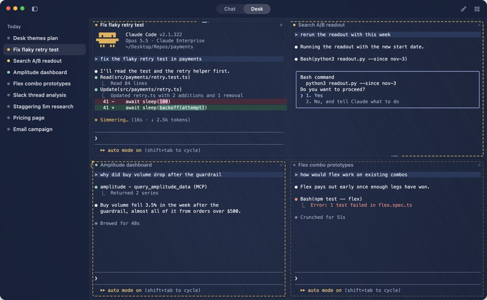
Still, the needle movesStitchDenim and gold thread, for an app called Spool. Each pane is a patch sewn onto the ground.While Claude works, a needle sews around the pane's edge. It stops and blinks when Claude needs you, and a finished pane's seam closes with a knot.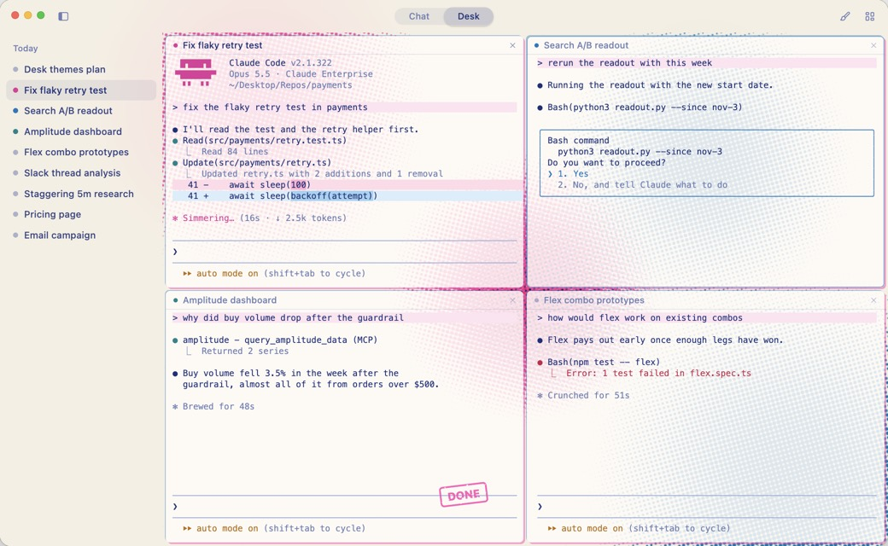
StillRisoA two-ink risograph print in fluorescent pink and blue, a little out of register, with Claude's text in blue ink.A working pane gets a pink halftone in its corner and a waiting one a blue halftone. A finished pane is stamped DONE.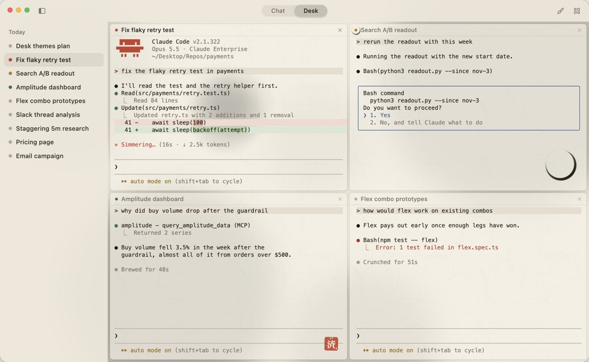
Moves at 6 fpsSumiInk on washi paper, with Claude's accent in vermilion.Ink spreads under a pane while Claude works on it. A pane that needs you gets an ensō, and a finished one is sealed with a hanko that reads 済.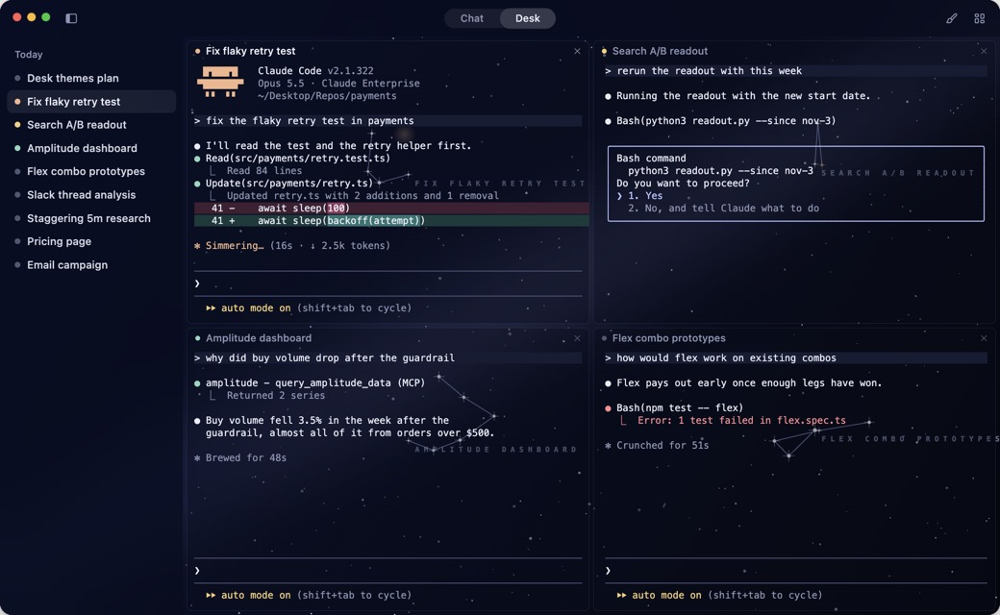
Moves at 12 fpsConstellationA night sky where each chat has its own constellation, named after the chat in small caps.Every finished turn adds a star to its chat's constellation and draws a line to it. The next star glows faintly while Claude works, and the last one blinks amber when Claude needs you.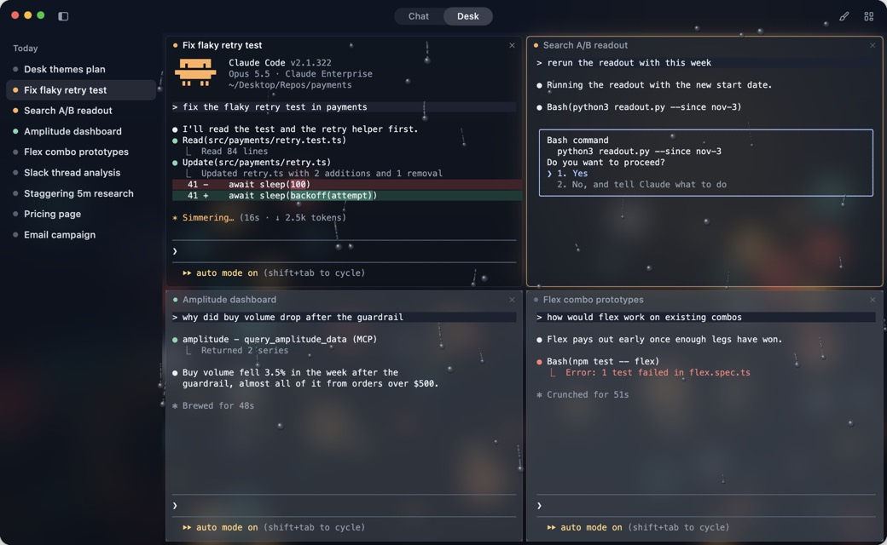
Moves every frameRainA city at night through a wet window. Drops run down the glass and go around the text.A pane you have left alone fogs over. A working pane stays clear, a waiting pane has a warm light behind it, and a finished turn wipes its pane clear.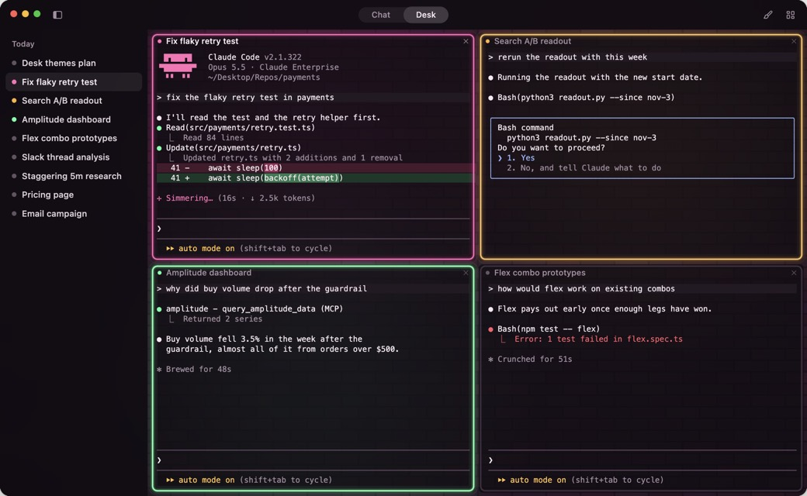
Still, the tubes flickerNeonEach pane is outlined by a neon tube on a dark brick wall.Work lights the tube pink. A question makes it buzz amber, a finished turn strikes it green with a stutter, and an idle pane is an unlit tube.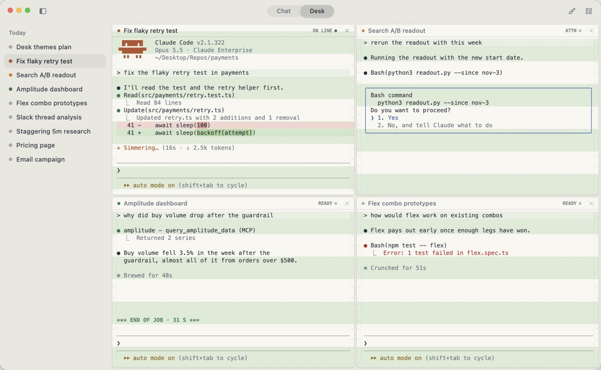
Still, feeds a line now and thenGreenbarContinuous-form printer paper, its green bands lined up with the terminal's rows, with sprocket holes down both edges.A working pane feeds a line every couple of seconds and shows ON LINE. A waiting pane blinks its ATTN lamp, and a finished one prints END OF JOB with its time.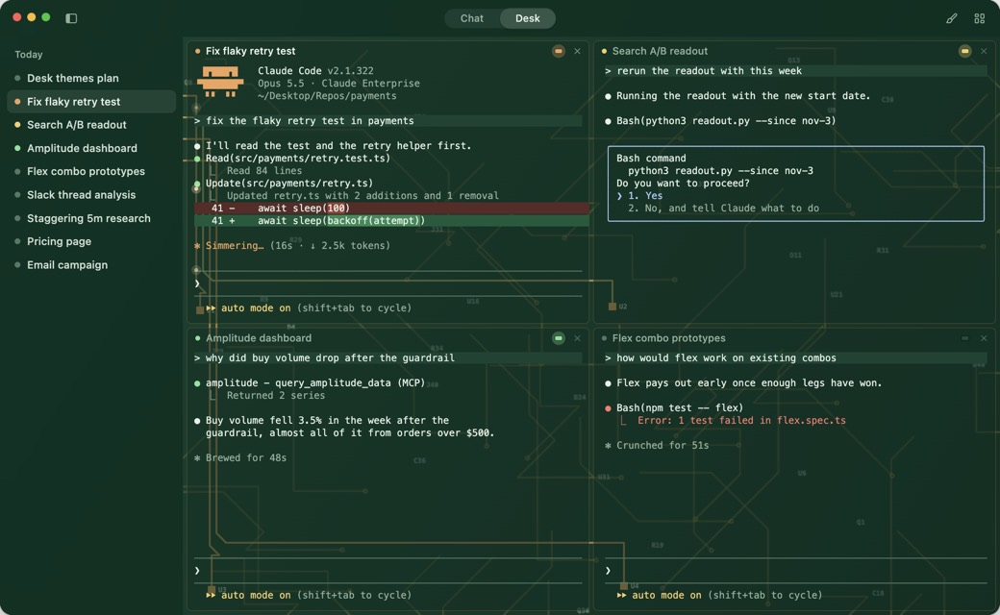
Still, pulses moveCircuitA circuit board, with each pane wired to its own row in the chat list.Work sends pulses down the pane's trace to its chat. A question blinks the pane's LED amber, and a finished turn sends one bright pulse home.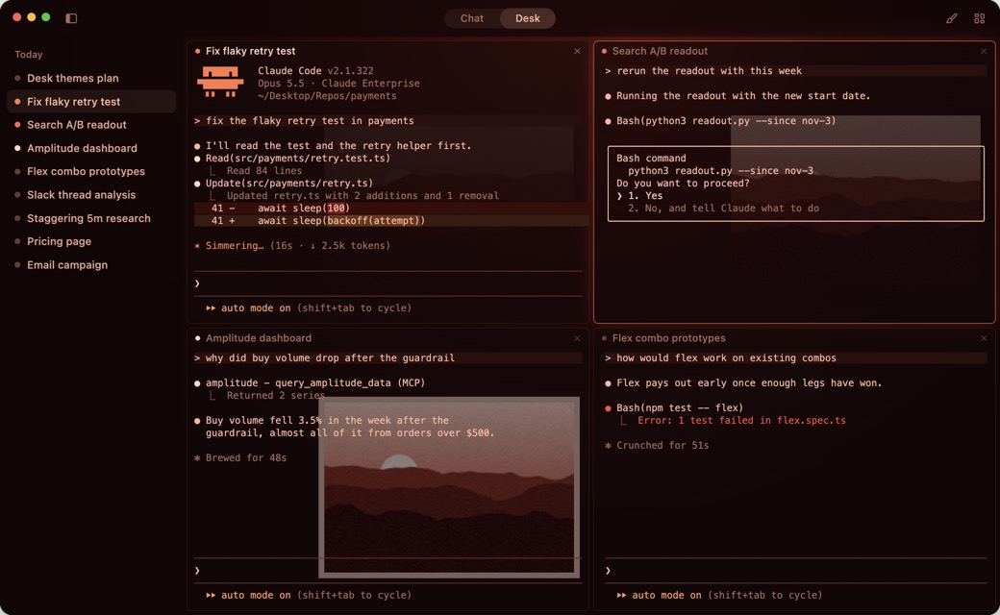
Moves at 8 fpsDarkroomA darkroom under red safelight, with Claude's text in red and amber only.Behind a working pane a print slowly develops. A finished one is fixed with a white border, and a pane that needs you makes the safelight pulse.If you want a few to build next, I'd start with Departures, Constellation and Stitch. Each one draws something Spool already knows: a chat's title and state, its number of finished turns, and how long Claude has been working.
| Theme | How often the ground redraws | What Spool would need |
|---|---|---|
| Departures | Still, and the title flaps redraw only while they flip | The worker draws over each pane's title bar, so Spool hands it the titles and hides its own |
| Thermal | 10 fps, from a 130 by 80 field scaled up | A heat value per pane from the state history Spool already keeps |
| Greenhouse | 8 fps | Vine growth saved per chat, so it survives a restart |
| Stitch | Still, with the needle on the effects layer | Nothing new |
| Riso | Still, redrawn when a state changes | A contrast check for pink and blue text on white |
| Sumi | 6 fps while a pane works, still otherwise | Nothing new |
| Constellation | 12 fps for the twinkle | The star count per chat, taken from its finished turns and saved with the chat |
| Rain | Every frame, above the panes, plus a blur under them | The heaviest of the twelve. I'd cap the drops at 30 fps and drop the blur on battery |
| Neon | Still, with the tubes on the effects layer | Nothing new |
| Greenbar | 4 fps | The band offset tied to each terminal's scroll position, so the paper moves with the text |
| Circuit | Still, with pulses on the effects layer | Each chat row's position in the sidebar, sent with the pane rects |
| Darkroom | 8 fps | Nothing new |
The layers, back to front
Every theme fills the same layers. Separate the layers, under Fig 1, pulls them apart.
- 1
Ground
The ground is one canvas behind the whole window, drawn on the terminals' own cell grid of 7 by 16.5 points at Monaco 12. Each pane's first character is on that grid, so a glyph in the ground lines up with the text in front of it. It renders in a worker, away from terminal output.
- 2
Chrome
The title bar and chat list are tinted glass over the ground, so the window reads as one scene.
- 3
Panes
Panes are glass at one of three strengths. Solid shows no ground. Faint lets 12% of it through. Around text shows the ground in empty cells and fades it out under text. Gaps stay 4px and corners 6px.
- 4
Claude's text
xterm draws on a transparent background, so the pane's glass is the background. Its 16 colors come from the theme, and Claude Code's own colors come from a theme file Spool writes for it.
- 5
Effects
One canvas over the panes draws waiting and finished states, drop targets, dimension lines and the reveal edge. It stays empty while nothing is happening.
- 6
Overlays
Each theme restyles what floats over the panes, such as the ⌘ labels and drop zones.
Rules that keep the layers out of each other's way:
- The ground fades under any cell that holds text, read from the terminal buffer four times a second. Each theme's text colors pass WCAG AA against its pane color.
- Ambient motion stays in the ground, at 12 to 15 frames a second. Reactions to Claude's state play once and stop, and keyboard actions never animate.
- Claude's state shows on the pane and in the ground around it, so a waiting Claude stands out from across the Desk.
Picking a theme
- A brush button in the title bar, left of Tidy, opens the tray, and so does ⌥⌘T. It rises from the bottom of the Desk with one live thumbnail per theme.
- Clicking a thumbnail applies it. The new theme grows out of the thumbnail in about 0.7 seconds, and each theme draws the edge its own way: spinner glyphs for Clay, a compass line for Blueprint, ink for Paper, a CRT power-on for Phosphor.
- The arrow keys preview each theme at once with no animation, the way VS Code's theme picker does. Return keeps it. Escape puts back the theme you had when the tray opened.
- The terminals change in the same frame. Claude's own colors follow about half a second later, once Claude Code reloads its theme file.
- Spool saves your theme along with the wallpaper and motion settings.
| Key | Action |
|---|---|
| ⌥⌘T | Open or close the tray |
| Arrow keys | Preview the next or previous theme |
| Return | Keep the previewed theme |
| Esc | Go back to the theme you had |
| Click | Apply with the reveal |
Tests with real terminals
I ran each idea against xterm 6 with its WebGL renderer in Electron 33, the engine Spool uses, and against Claude Code 2.1.322 without sending it a message.
Works. xterm can draw on a transparent background.
xterm 6's WebGL renderer paints its background as one rectangle in the theme's background color, alpha included. With a transparent theme the ground shows through, and glyphs keep their edges on a Retina screen. Spool has to create terminals with allowTransparency on, since it can't be switched on later.
 Four real xterm panes over the Clay ground, with Claude Code screens scripted in Clay's colors. The glyphs stay out of the text.
Four real xterm panes over the Clay ground, with Claude Code screens scripted in Clay's colors. The glyphs stay out of the text.Works, per terminal and live.
Claude Code reads custom themes from ~/.claude/themes, one JSON file per theme with a name, a base preset and color overrides, and theme is an ordinary settings key. I started Claude with --settings '{"theme":"custom:spool-probe"}' and it drew in the probe's colors instead of your dark-daltonized default. Then I rewrote the file while it ran, and its colors changed without a restart. Claude Code watches that folder, so Spool can recolor every Claude it started by rewriting one file.
Show detail
The folder has to exist before Claude starts, so Spool creates it at launch. The overrides cover about 70 tokens, including claude, text, inactive, permission, promptBorder, userMessageBackground, the diff colors and clawd_body. Clawd's eyes are painted as black cells through clawd_background, so each theme sets that too. Claude Code's issue tracker lists cases where some overrides were ignored, among them diff colors and markdown, so the first build checks each token on screen. The probe file was deleted afterwards and no transcript was created.
Possible through Claude's status signal, OSC 7501.
Claude Code 2.1.295 and later asks the terminal about OSC 7501 when it starts. If the terminal answers, Claude reports its state as working, blocked, done, error or idle, along with the kind of block and a title. Spool's terminals can answer and listen, which gives each pane its state the moment it changes. That drives the waiting and finished reactions, and it can replace the waiting flag in ~/.claude/sessions, which we haven't seen fire.
Show detail
I found the question and the report format in the 2.1.322 binary and watched Claude ask the question. Claude reports only when its state changes, and changing it means sending a message, so I haven't seen a report arrive yet.
About 10 ms for four terminals.
Setting a new palette on four WebGL terminals took 0.4 ms, and all four had redrawn within 8 to 12 ms. The ground's work per frame was 0.02 ms for Clay and Snowfall and 1.9 ms for Contour, which ran on the CPU in the test and moves into a shader in the real build.
Both work without touching xterm.
On a transparent terminal, a CSS drop-shadow on xterm's canvas glows around the glyphs alone. Scanlines are a gradient laid over the pane. Phosphor uses both.
 Phosphor on real xterm panes. The amber Clawd and the glow come from the same CSS on every pane.
Phosphor on real xterm panes. The amber Clawd and the glow come from the same CSS on every pane.Works in Electron 33.
View Transitions capture xterm's WebGL canvases correctly. The old theme is a still frame and the new one stays live, so Claude keeps printing inside the circle while it grows.
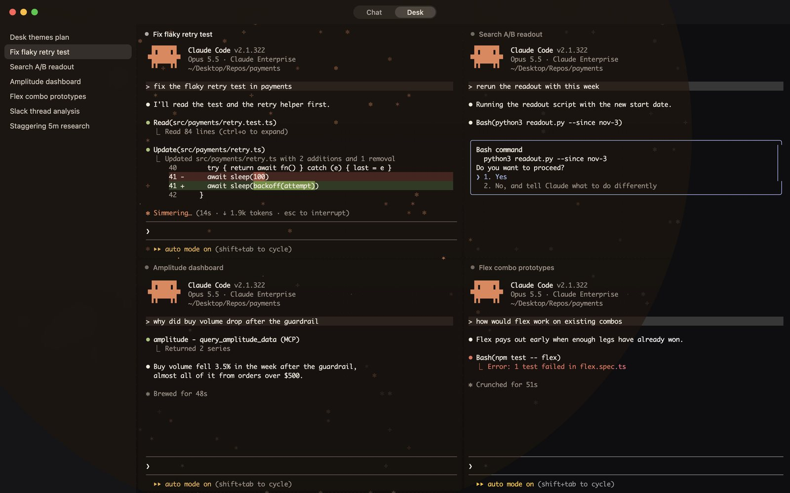
A reveal from Spool to Clay paused partway. The arc at the bottom left and top right is the edge of the circle.Left out. Claude hides the terminal cursor.
Claude Code turns off the terminal's cursor and draws its own, which is why Ghostty's cursor-trail shaders stop working inside Claude Code. Two reports in Claude Code's issue tracker describe it. Spool's effects react to Claude's state instead of the cursor.
16 WebGL contexts per page.
Chromium drops the oldest WebGL context once a page has 16. Each visible terminal holds one today, and themes add two, the ground and the effects layer. That makes 14 visible panes the most before a terminal falls back to xterm's slower DOM renderer.
Upgrade it first.
Electron 33 reached end of life on Apr 28, 2025. It also predates the fix for the macOS 26 bug where Electron windows drove up WindowServer's GPU use, which shipped in Electron 36.9.2, 37.6.0 and 38.2.0. Animated themes would add to that load. The current release is Electron 45.
Show detail
Real Liquid Glass in Electron needs a third-party addon, electron-liquid-glass, which places Apple's glass view behind the page through a private API and needs a transparent window. Glass uses the vibrancy Spool already turns on, and the addon can come later if you want it.
Build order
Each phase ends with typecheck, build and screenshots from the hidden test window. Nothing gets committed until you approve it.
| Phase | You get | Main changes | Status |
|---|---|---|---|
| 1. Electron upgrade | The same app on Electron 45, with the macOS 26 GPU fix | package.json, a check of node-pty's prebuilt binary, the webview and page-capture paths | Needs your OK |
| 2. Theme engine and Claude's colors | Spool, Paper and Phosphor, switched from the menu | theme/themes.ts and theme/apply.ts, colors in app.css moved onto tokens, lib/terminals.ts for transparent terminals, palettes and OSC 7501, main/claude-theme.ts, the settings flag in pty.ts | Planned |
| 3. Ground renderer | Clay, Glass and Blueprint, with wallpaper inside panes | ground/ with a WebGL2 worker on an OffscreenCanvas, a glyph atlas in the terminal font, one file per scene, text masks, frame caps and pausing when the window is hidden | Planned |
| 4. Tray and reveal | The brush button, ⌥⌘T, live thumbnails and the reveal | components/ThemeTray.tsx, theme/reveal.ts | Planned |
| 5. Reactions | Snowfall and Contour, plus state reactions, drop zones and ⌘ labels in every theme | effects/ canvas, Desk.tsx hooks for drags, resizes and Tidy | Planned |
| 6. Polish | Light and dark pairing and a settings panel | The battery rule, a contrast check over every palette, screenshots of each theme in each state | Planned |
Choices before I start
My pick comes first in each.
- 1
Upgrade Electron first
Move from 33 to 45 as its own step, before any theme work. The other choice is to build on 33 and upgrade later, with the macOS 26 GPU bug still in.
- 2
Which themes, in which order
Paper, Phosphor, Clay, Glass and Blueprint in phases 2 and 3, Snowfall and Contour in phase 5. Tell me any you'd cut or move up.
- 3
How much wallpaper shows inside panes
Around text, with the ground at full strength in empty cells and faded under text. Or faint, at 12% everywhere. Or solid, so the wallpaper shows only in the chrome and the 4px gaps. Fig 1 has the first two.
- 4
Claude's colors follow the theme
Spool writes ~/.claude/themes/spool.json and starts its own Claudes with a theme setting. Your iTerm sessions keep dark-daltonized, and Spool shows up as one more theme in Claude Code's own /theme list. The other choice leaves Claude's colors alone, which clashes in Paper and Phosphor.
- 5
What a theme covers
The Desk, the title bar and the chat list now, and the chat view in phase 6. Or the whole window from the start, which adds the transcript view to phase 2.
- 6
Light and dark
Follow macOS, with a light pick and a dark pick, Paper and Spool to start. Or one theme until you change it.
- 7
Motion
Moving grounds run at half speed on battery and hold still when Reduce Motion is on. The other choices are full speed all the time, or still on battery.
- 8
Fonts
Monaco 12 in every theme. Or a font per theme, such as Departure Mono for Phosphor, which changes the cell size, so every pane resizes when you switch.